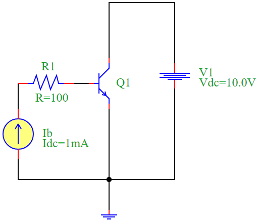
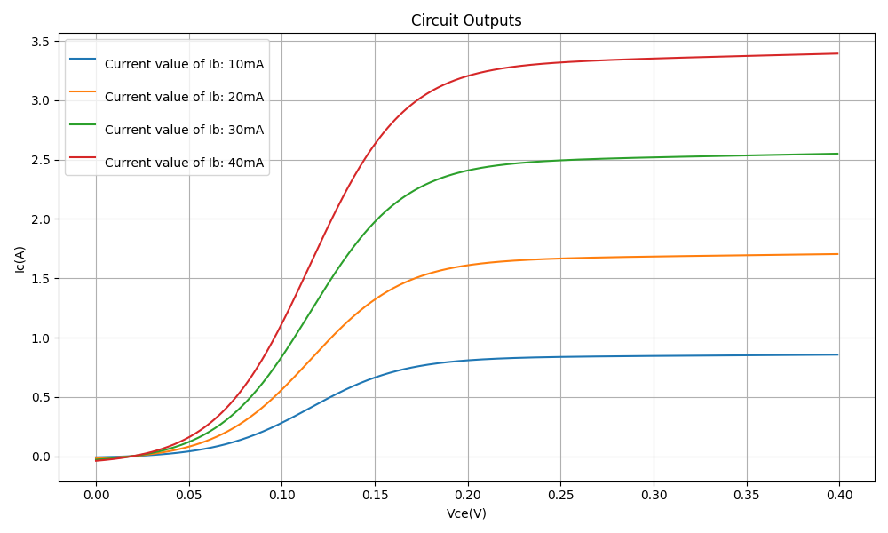

BJT Characteristics Analysis
Introduction
A Bipolar Junction Transistor (BJT) is a semiconductor device used for amplification and switching applications. In this document, we analyze the collector current (I:sub:`C`) versus collector-emitter voltage (V:sub:`CE`) characteristics for different base currents (IB).
Equations
The fundamental equation governing the BJT in active mode is:
where:
\(I_C\) is the collector current,
\(I_B\) is the base current,
\(\beta\) is the current gain of the transistor.
The collector-emitter voltage is given by:
Circuit Description
The circuit consists of:
A DC current source supplying base current (\(I_B\)),
A DC voltage source (\(V_{CC}\)),
An NPN transistor (\(Q_1\)),
A resistor (\(R_1\)) to limit base current.
Circuit Diagram
Python Simulation Code
The following Python script simulates the BJT characteristics using the PyAMS library:
from pyams_lib import circuit
from models import DCCurrent, DCVoltage, NPN, Resistor
import matplotlib.pyplot as plt
# Define elements
Ib = DCCurrent("0", "N02")
V1 = DCVoltage("N01", "0")
Q1 = NPN("N01", "N04", "0")
R1 = Resistor("N02", "N04")
# Set component values
Ib.setParams("Idc=1mA")
V1.setParams("Vdc=10.0V")
Q1.setParams("Bf=100.0 Br=1.0 Is=1e-16 Nf=1.0 Nr=1.0 Vaf=10 Var=10 Vt=0.025 area=1.0 gmin=1e-12")
R1.setParams("R=100")
# Create circuit and add elements
circuit = circuit()
circuit.addElements({'Ib': Ib, 'V1': V1, 'Q1': Q1, 'R1': R1})
# Set outputs for plotting
circuit.setOutPuts(Q1.Vce, Q1.Ic)
circuit.analysis(mode="dc", param=V1.Vdc, start=0, stop=0.4, step=0.001)
# Execute and plot for different base currents
plt.figure(figsize=(10, 6))
for i in [10, 20, 30, 40]:
print(f"\nCurrent value of Ib: {i}mA")
Ib.Idc += i / 1000
circuit.run()
Vce, Ic = circuit.getOutPuts()
label = f"Current value of Ib: {i}mA"
plt.plot(Vce, Ic, label=label)
plt.xlabel("Vce(V)")
plt.ylabel("Ic(A)")
plt.title("BJT Characteristics")
plt.legend()
plt.grid(True)
plt.tight_layout()
plt.show()
Simulation Results
The results obtained from the simulation show how the collector current varies with the collector-emitter voltage for different base currents.
Conclusion
This simulation provides insights into the BJT’s behavior under different base currents, demonstrating its amplification properties. The collector current increases with base current, confirming the fundamental transistor operation principle.